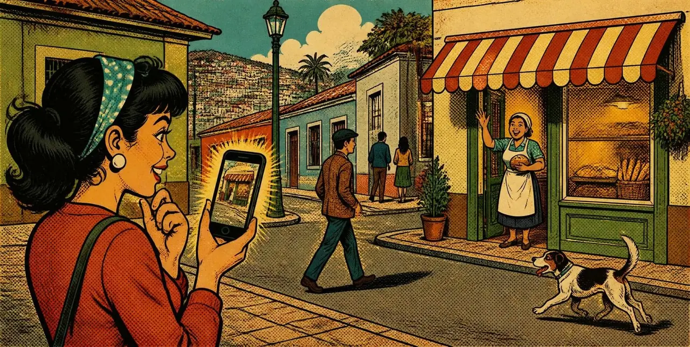

Marraqueta
Crujiente por fuera, suavecita por dentro. La de todos los días.
$2.400 el kiloMarraqueta y hallulla dos veces al día. Pasa, saluda a la señora María y llévate la tuya.

Hecho cada día, con la receta de siempre.
Crujiente por fuera, suavecita por dentro. La de todos los días.
$2.400 el kiloRedonda y pareja, ideal con palta o con mantequilla.
$2.400 el kiloAmasado a mano, como en la casa de la abuela.
$350 la unidadHojaldradas, para el té de la tarde.
$300 la unidad
«El pan se hace con tiempo. Por eso me levanto antes que el barrio.»
Pasaje Los Aromos 482, La Florida
La del toldo a rayas. Si ves al perro en la puerta, llegaste.
WhatsApp: +56 9 5555 0182